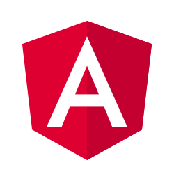

Java
Versions: 7, 8, 11, 17
~15 years experience
Software Developer
Proactive and responsible Java developer focused on web systems. More than 15 years of experience building highly critical products with strong technical quality.
Working from 2024 to present, focused on Spring Boot applications.
Worked from 2021 to 2024 as a Java 17 developer (Spring Boot 3.x), guiding junior and mid-level developers and analyzing new features.
Worked from 2020 to 2021 as a Java 11 developer using Spring Boot WebFlux.
Worked from 2019 to 2020 with Java in credit card management systems.
Worked from 2013 to 2019 with Java development and Ionic mobile applications.
Worked from 2008 to 2013 with health plan management systems.
Computer Science studies from 2006 to 2014, building a strong software development foundation.
Versions: 7, 8, 11, 17
~15 years experience
Version: 3.x
~4 years experience

Version: 2+
~7 years experience
Versions: 0.12.x, 8.x, 10.x
~8 years experience
Versions: 11g, 12c
~10 years experience
~12 years experience
~5 years experience
~4 years experience
~6 years experience